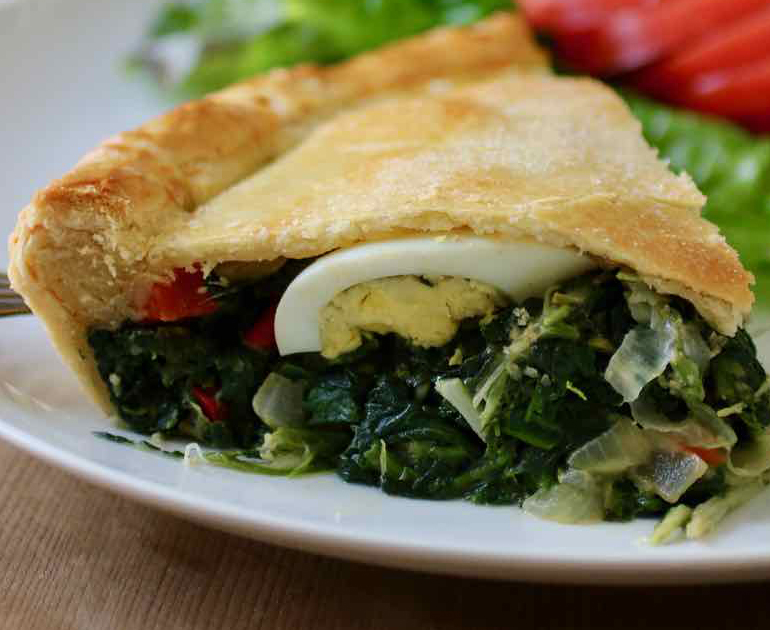

| Pascaculina $10 Using our housemade dough to create a flaky crust. Fresh spinach and egg warm up the inside for a filling treat. |
 Matambre $12 Always fresh never frozen, We stuff our steak with fresh pepper, onion and tomato along with egg. We top it with our housemade chimichurri. Matambre $12 Always fresh never frozen, We stuff our steak with fresh pepper, onion and tomato along with egg. We top it with our housemade chimichurri.
|
Chivito $15.75 Burgers long last cousin, We use grilled steak between two toasted buns. Loaded with your choice of egg, cheese, onion, pepper and lettuce we dare you to finish this juicy delight. Oh, and get your napkins. |
Asado $17 Juicy short cut ribs grilled over our firewood grill. We serve 'em up with a caprese salad using imported olive oil. ' |
 Choripan $11 Pork sausage snuggled between our fresh french bread. Served up with a side of chimichurri. Choripan $11 Pork sausage snuggled between our fresh french bread. Served up with a side of chimichurri. |
Empanada $5ea Fluffy flaky crust we let you choose your fillin'!
Ham and cheese. Veggie. Ground beef or sausage! |
Parrillero $30 Feeds 4 people. Our sampler of meats include: Morcilla, Sweet Morcilla, chinchulin, asado strips and chorizo. |
Milanesa napolitana $20 Served with french fries on the side. We bread our steak and then we put delicious ham and melty cheese on top. |
| Ensalada Rusa $3 Otherwise known as Russian salad, This is our housemade potato salad. We add carrots, eggs, pickles, ham, peas and mayonnaise. |
Papas Al Plomo $7 Oven roasted baked potatos seasoned and loaded with cream cheese and cheddar cheese. |
Croquetas $7 Includes two fluffy deep fried food rolls. Your choice of rice, potato or ham and cheese. |
 Alsajor $3 Moist chocolate or vanilla cakes with dulce de leche inbetween. Covered in white chocolate. Alsajor $3 Moist chocolate or vanilla cakes with dulce de leche inbetween. Covered in white chocolate. |
Ticholos de Banana $5 You get 10 of these delicous dried banana bars. |
Churro $3 Fried dough pastry with sugar and a drizzle of chocolate. |
| Chaja $5 Moist meringue cakes with your choice of peach, strawberry or lemon. |
Borrachitos $5 Not for the kids! Our vanilla bean cake drowned in bourbon topped with shredded coconut. |